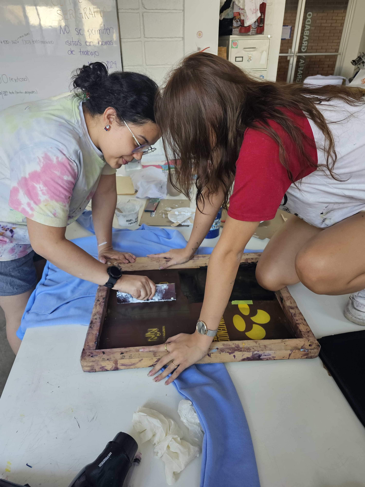

¡Bienvenidos a mi Portafolio!
Te doy la bienvenida a mi universo creativo.
Soy Susan Andino, y en cada proyecto que verás aquí, busco plasmar mi pasión por el diseño y mi visión única.
Espero que disfrutes este recorrido visual por mis exploraciones en identidad de marca y diseño editorial.

¿Pero quién soy?
Soy Susan Andino, la menor de cinco hermanos y una diseñadora gráfica en proceso con una marcada pasión por la creatividad y el arte. Mi enfoque se centra en el diseño estratégico de identidad visual y editorial, donde encuentro particular satisfacción en revitalizar marcas y dar un nuevo impulso a su imagen. Aunque mi naturaleza es introvertida y a veces tímida, poseo un lado humorístico y me esfuerzo por ser siempre comprensiva. Disfruto profundamente indagar en los motivos detrás de mis diseños y, al colaborar con clientes, valoro el proceso de compartirles la lógica creativa, ayudándolos a comprender y experimentar el poder transformador del diseño. Mi interés se extiende a la colaboración con agencias editoriales de diversos ámbitos y a la elaboración de materiales como manuales de videojuegos, fusionando mis pasiones con un propósito profesional.
¿Pero quién soy?
Soy Susan Andino, la menor de cinco hermanos y una diseñadora gráfica en proceso con una marcada pasión por la creatividad y el arte. Mi enfoque se centra en el diseño estratégico de identidad visual y editorial, donde encuentro particular satisfacción en revitalizar marcas y dar un nuevo impulso a su imagen. Aunque mi naturaleza es introvertida y a veces tímida, poseo un lado humorístico y me esfuerzo por ser siempre comprensiva. Disfruto profundamente indagar en los motivos detrás de mis diseños y, al colaborar con clientes, valoro el proceso de compartirles la lógica creativa, ayudándolos a comprender y experimentar el poder transformador del diseño. Mi interés se extiende a la colaboración con agencias editoriales de diversos ámbitos y a la elaboración de materiales como manuales de videojuegos, fusionando mis pasiones con un propósito profesional.


¿Pero quién soy?
Soy Susan Andino, la menor de cinco hermanos y una diseñadora gráfica en proceso con una marcada pasión por la creatividad y el arte. Mi enfoque se centra en el diseño estratégico de identidad visual y editorial, donde encuentro particular satisfacción en revitalizar marcas y dar un nuevo impulso a su imagen. Aunque mi naturaleza es introvertida y a veces tímida, poseo un lado humorístico y me esfuerzo por ser siempre comprensiva. Disfruto profundamente indagar en los motivos detrás de mis diseños y, al colaborar con clientes, valoro el proceso de compartirles la lógica creativa, ayudándolos a comprender y experimentar el poder transformador del diseño. Mi interés se extiende a la colaboración con agencias editoriales de diversos ámbitos y a la elaboración de materiales como manuales de videojuegos, fusionando mis pasiones con un propósito profesional.